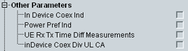

Other UE Capabilities
This section indicates the UE capabilities categorized by 3GPP as "other parameters".

Other capabilities
Support of in-device coexistence indication and autonomous denial functionality.
Remote command:Support of power preference indication.
Remote command:Support of RX-TX time difference measurements.
Remote command:Support of in-device coexistence indication for UL CA.
Remote command: